1904

Goldpin FIFA 1904
Since childhood, I've been collecting sports memorabilia related to football. Over the last 50 years, this collection has grown with a lot of passion, many wonderful encounters, countless air miles, and, of course, a considerable amount of money.
The collectibles from the period between 1924 and 1950 are almost exclusively secondhand, acquired from the families of the players of that era.
1924

1928

1930

Jules Rimet Cup of Pedro Petrone
11 May 1905 - 13 December 1964
Pedro Petrone played as a striker for the Uruguayan national team and was also part of the 1924/28 Olympic team (29 international appearances with 24 goals).
World Cup trophy for the first World Cup winners in Uruguay, 1930, donated by the Uruguayan Football Association (A.U. de F.).
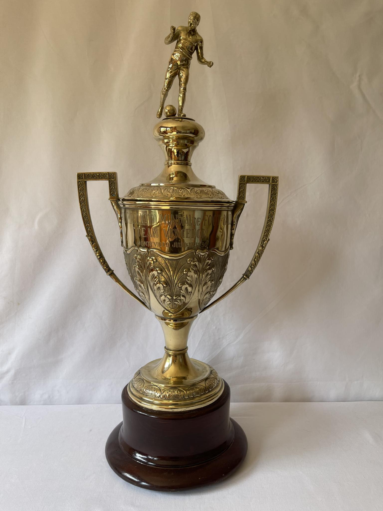
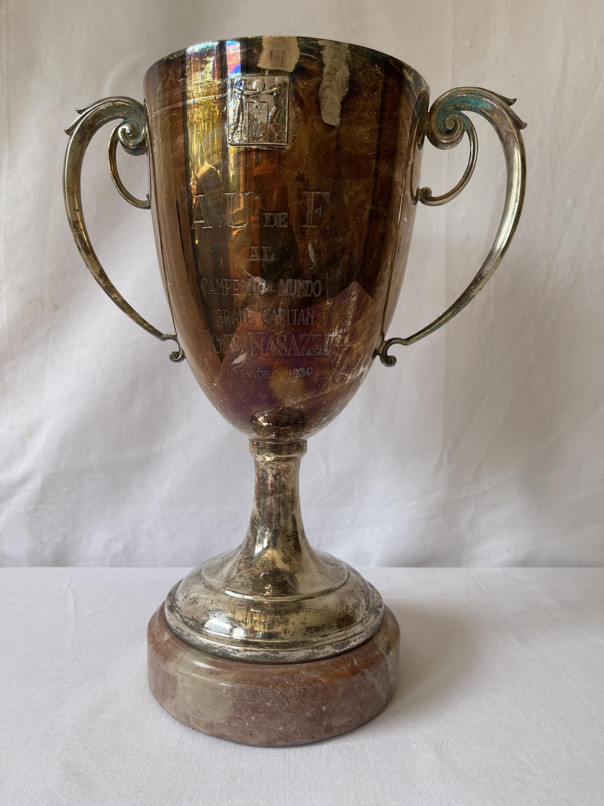
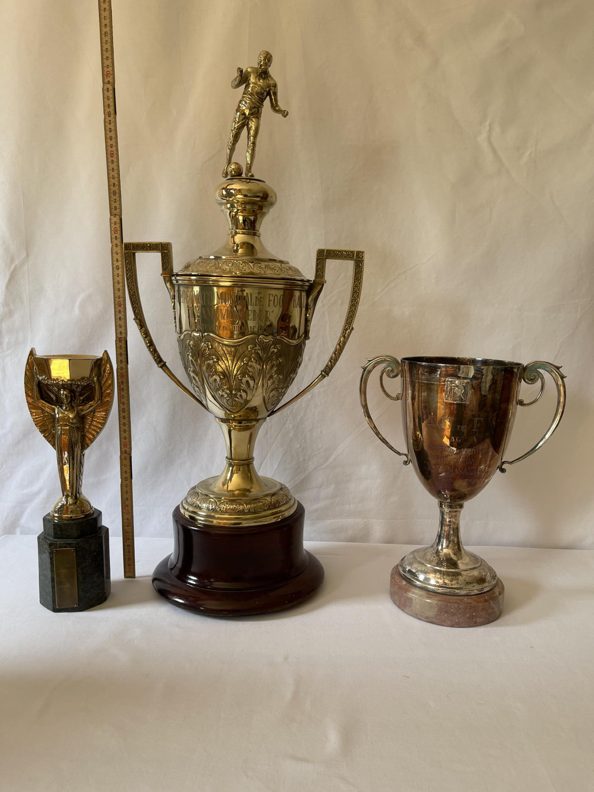
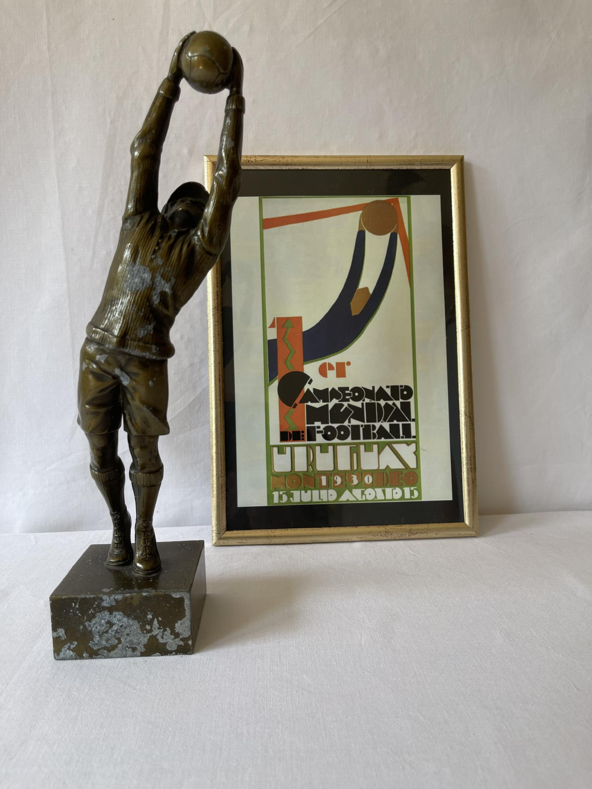
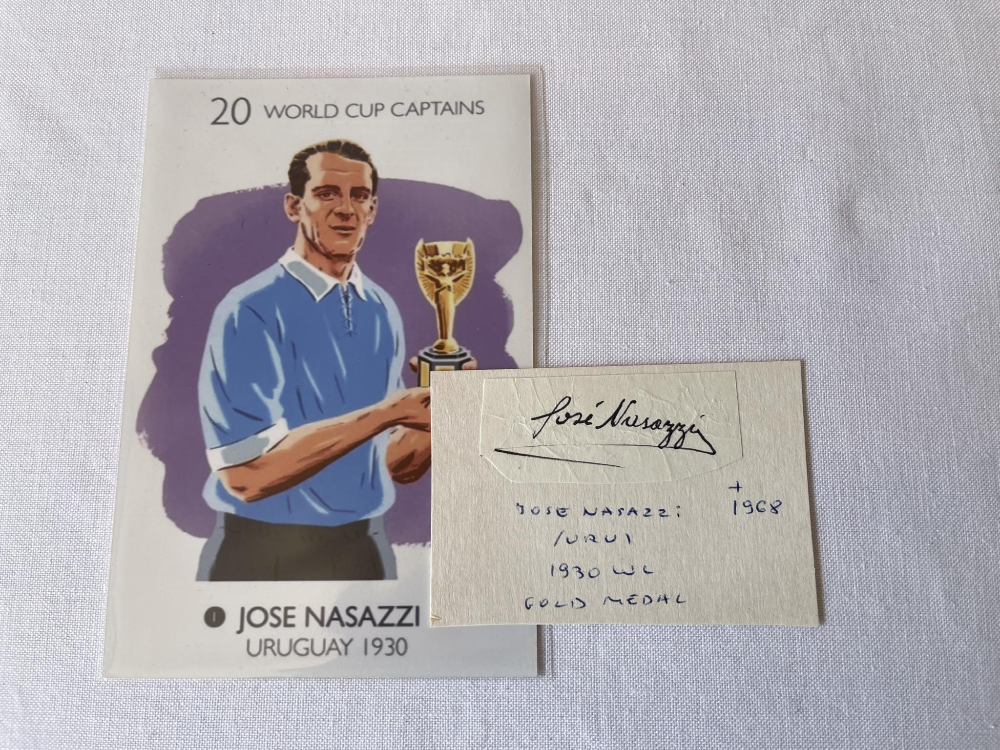
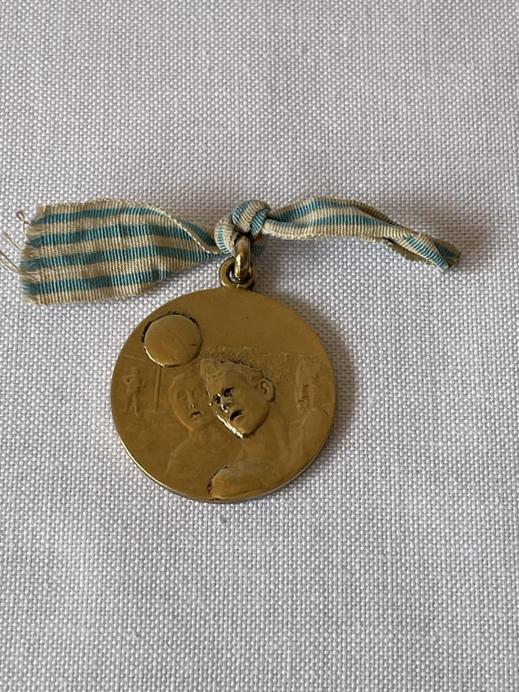
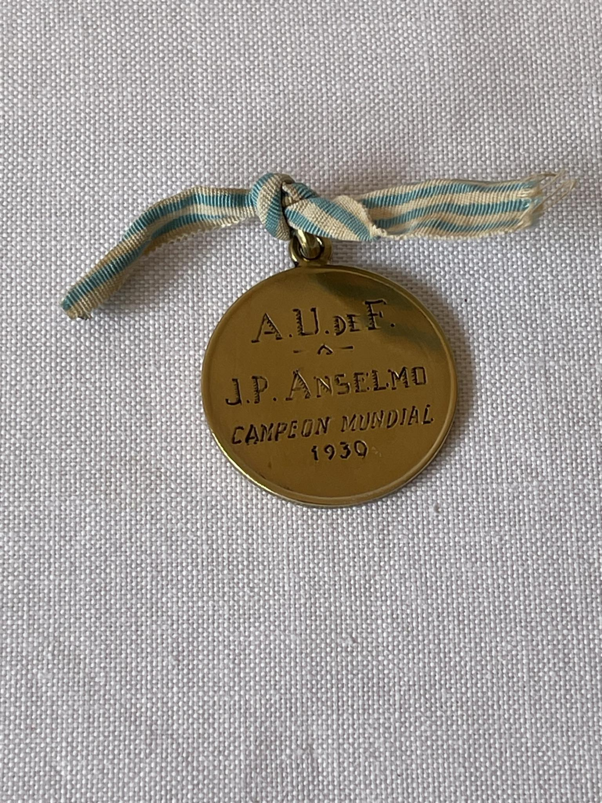
The unique items from Uruguay come from the collection of RONY ALMEIDA and were personally presented to me by his son, GABRIEL ALMEIDA, in Los Angeles, USA.
These collectibles were on loan from the Almeida family to the Football Museum in Montevideo until 2022.
1934

The collectibles from 1934 and 1938 come from the family estate of GIAMPIERO COMBI (goalkeeper and captain of the 1934 World Cup champions, Kingdom of Italy).
1938

1950

1954

Top Scorer Medal SANDOR KOCSIS
21 September 1929 - 22 July 1979
The striker for the Hungarian national team scored 11 goals and his team finished as runner-up in the World Cup behind Germany.
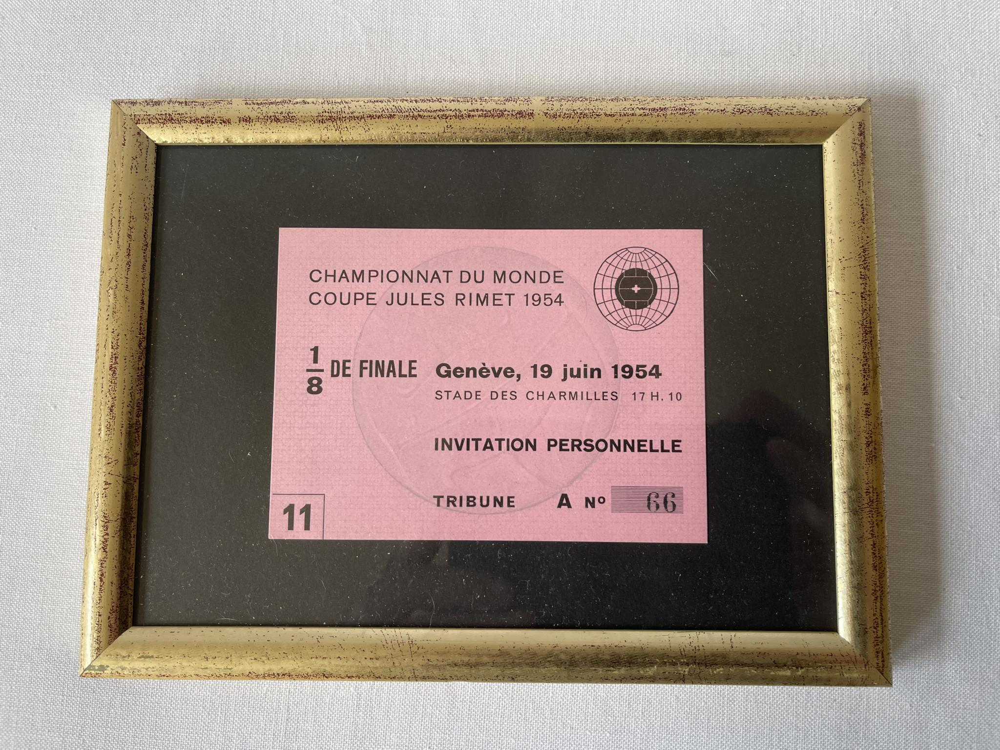
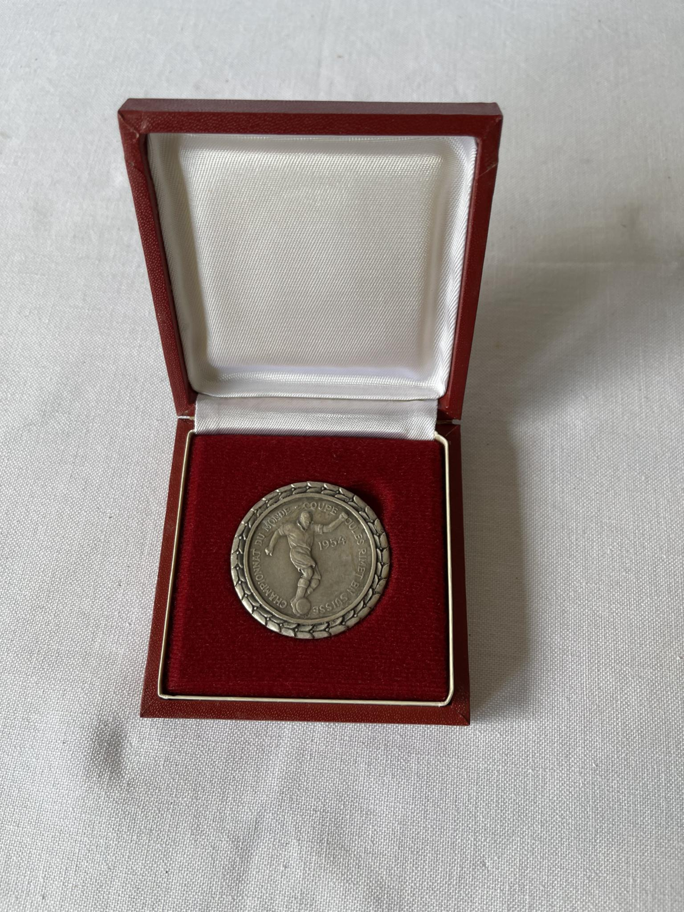
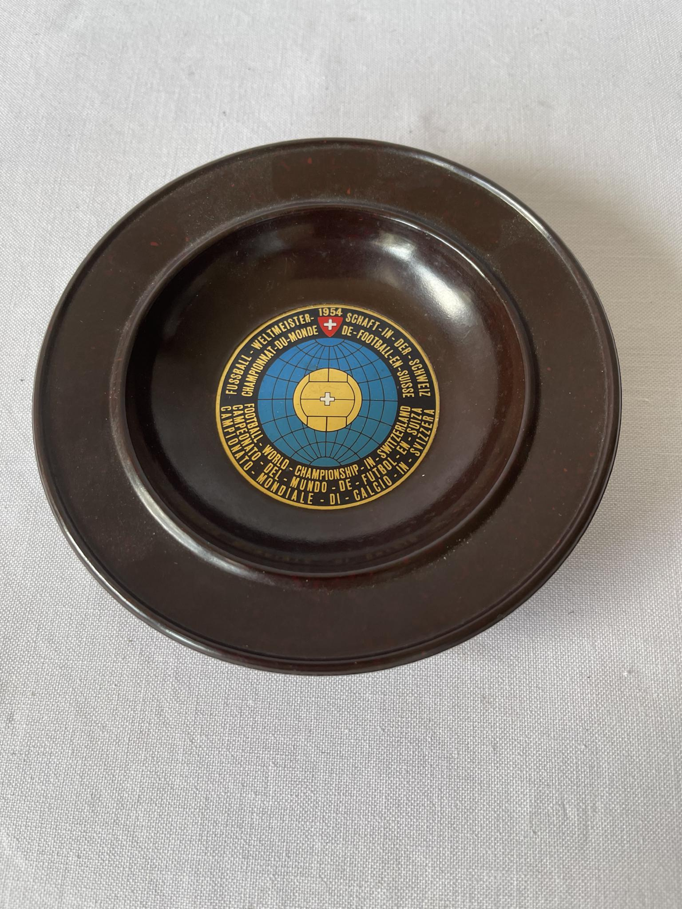
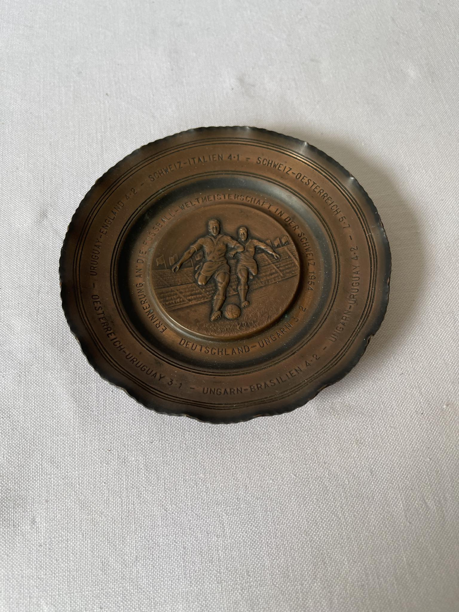
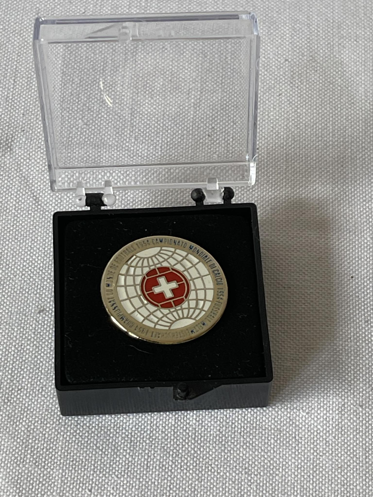
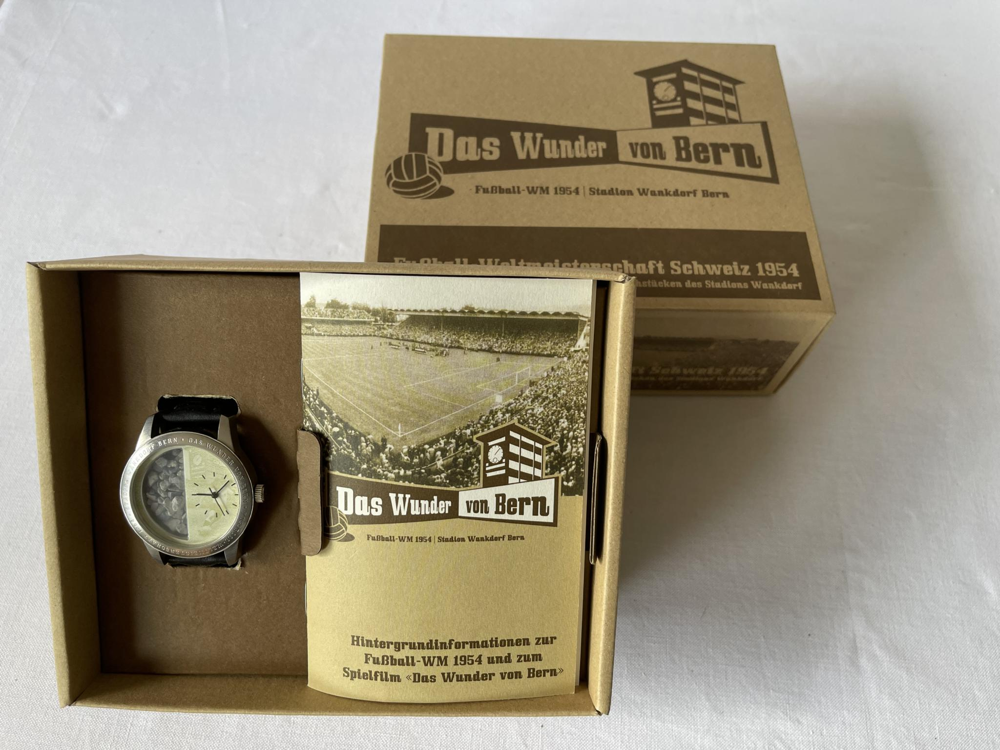
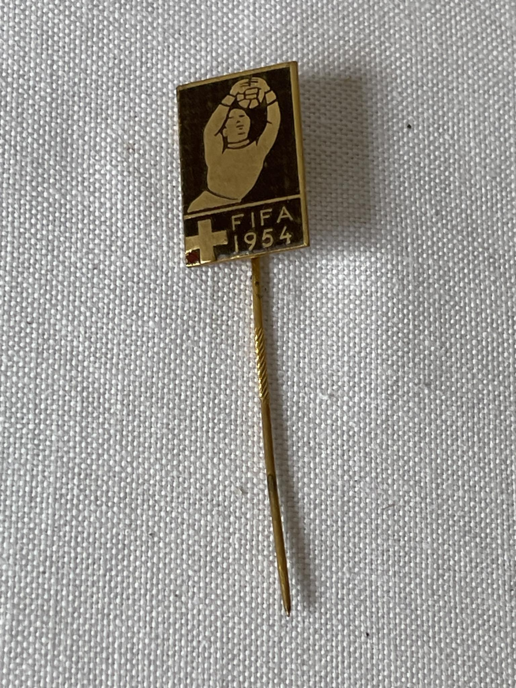
1958

1962

1966

1970

1974

1978

1982

1986

1990

1994

1998

2002

2006

2010

2014

2018

Always with the intention of opening an exhibition in 2030 for the 100th anniversary of the World Cup.
2022

2026
Unfortunately, in recent years I've had serious health problems with my heart, so I lack the strength to set up my planned and much-desired exhibition.
Therefore, it is with a heavy heart that I have now decided to sell my collection.
The collection is only available for purchase as a whole. In total, this collection consists of approximately 500 exquisite pieces.
Viewing the collection is possible at any time. I stand behind the authenticity and origin of the collection items to the best of my knowledge and belief.
Grundbachstrasse 29
3665 Wattenwil
Switzerland
+41 (0)79 340 93 63
tk@Top-World-Cup-Collection.ch
Kaisereggstrasse 10
3185 Schmitten
Switzerland
+41 (0)78 641 34 57
nk@Top-World-Cup-Collection.ch
Thank you. You can also write to us at tk@Top-World-Cup-Collection.ch, nk@Top-World-Cup-Collection.ch.